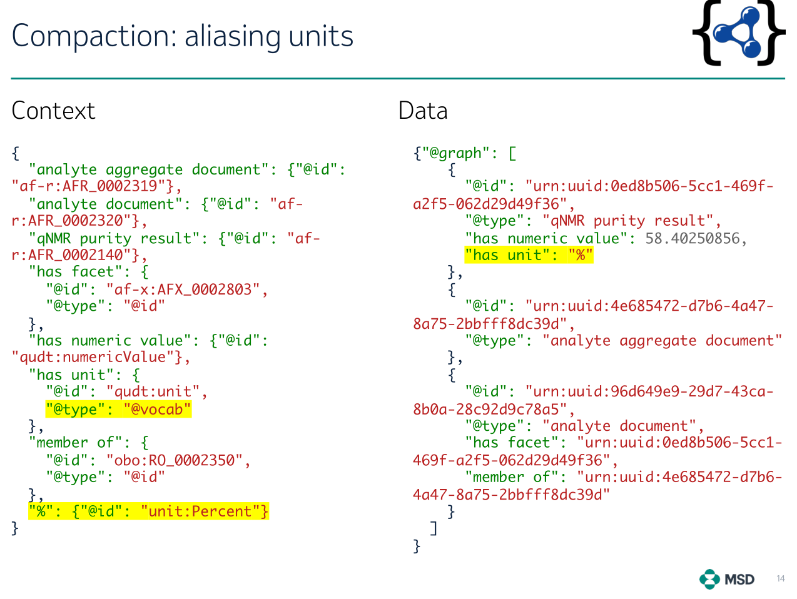

Outline
- JSON-LD
- What JSON-LD Can and Cannot Do
- Context examples from GS1 EPCIS
- Context examples from Allotrope
- Importance of Precise JSON-LD Serializations
- Innovations in JSON-LD 1.1
- JSON-LD Conformance Tests
- State of JSON-LD Support in RDF4J & GDB
- New Community Group: YAML-LD
- Polyglot Modeling
Links:
JSON-LD
- Came from the desire to let devs use RDF data in an easier way
- Manu Sporny has called RDF the “Three Mile Island nuclear disaster”
of the semantic web
- JSON-LD started 2010, now is a mature set of specs and
implementations
- Includes
Links:
JSON-LD Specs
Links are to latest editor drafts:
What JSON-LD Can Do
Map JSON to RDF and back in flexible ways:
- Represent any JSON as LD by using an external Context
(
Link header)
- Map JSON objects to RDF nodes: URL is field
@id, or
blank if none
- Express node types:
rdf:type is field
@type, can be array
- Map JSON fields to RDF props: attributes (data props) and relations
(object props)
- Map some strings to individuals by using
@base
- Attach datatypes to literals
- Attach lang tags to strings
- Treat JSON arrays as multivalued props (
@set, default)
or rdf:List (@list)
@nest extra fixed JSON props on RDF serialization, or
omit JSON props on parsing- Interpret JSON props locally, based on prop path or node type
(nested contexts)
- Produce and parse RDF graphs
- Group data by subject, lang tag, etc (
@container)
What JSON-LD Cannot Do
- Clean up or reformat data
- Validate data (use JSON Schema, SHACL or SHEX for that)
- Concatenate fields to make a URL
- Make RDF sub-nodes
How GraphDB Uses JSON-LD
- As data loading format and RDF output format (whole graph/repo,
resource, CONSTRUCT)
- In Mongo
Connector: fetch JSON from Mongo, use it as RDF in SPARQL
- With embedded context (duplication) or URL (network) context
- But cannot use externally provided context
- Limited to JSON 1.0 (see later)
Context Examples from GS1
EPCIS
JSON vs Turtle:

Context Examples from GS1
EPCIS
See epcis-context.jsonld
or my epcis-context-simple.jsonld
Field type means different RDF props depending on
context:
- In
sourceList it’s
epcis:sourceOrDestinationType (eg
cbv:SDT-possessing_party)
- In
bizTransactionList it’s
epcis:bizTransactionList (eg cbv:BTT-bol)
- In
sensorReport it’s epcis:measurementType
(eg gs1:AbsoluteHumidity)
"@context": {
"type": "@type",
"sourceList": {
"@id": "epcis:sourceList",
"@context": [
"possessing_party": "cbv:SDT-possessing_party",
"location": "cbv:SDT-location"
"type": {
"@id": "epcis:sourceOrDestinationType",
"bizTransactionList": {
"@id": "epcis:bizTransactionList",
"@context": [
"bol": "cbv:BTT-bol",
"cert": "cbv:BTT-cert",
"type": {
"@id": "epcis:bizTransactionType",
"sensorElementList": {
"@id": "epcis:sensorElementList",
"sensorReport": {
"@id": "epcis:sensorReport",
"@context": {
"type": {
"@context": {
"AbsoluteHumidity": "gs1:AbsoluteHumidity",
"AbsorbedDose": "gs1:AbsorbedDose",
"@id": "epcis:measurementType",
Context Examples from
Allotrope
Simplified JSON-LD representations of linked data based on Allotrope
Data Models, Jindřich Mynarz, Jan Rosecký, Vincent Antonucci, Jan Nešpor
Merck R&D IT Data Infrastructure. Presentation at Allotrope Connect,
20 September 2021: video, slides

Frame Examples from
Allotrope

Importance of
Precise JSON-LD Serializations
- Many communities base their data exchange on JSON Schema
- Yet want to have LD representation of their data
Examples:
Example Use Cases
Eg https://jsld.org: use
cases building on JSON-LD by transmute.industries
- Decentralized Identifiers
- Verificable Credentials
- Encrypted Data Vaults
- Agriculture Futures
- Incident Response
Innovations in JSON-LD 1.1
Best feature of W3C specs: accompanied by Implementation Reports
- JSON-LD 1.1
Processor Conformance
- Generated from EARL results from the JSON-LD 1.1 Test Suite
- EARL is an ontology to capture rest results
- Test subjects:
- JSONLD (Perl)
- guile-jsonld (GNU Guile)
- jsonld.js (JavaScript)
- PyLD (Python)
- Titanium (Java)
- Sophia (Rust)
- JSON-goLD (Go)
- JSON::LD (Ruby)
- jsonld-streaming-parser & serializer (JavaScript)
- rdf-parse (JavaScript)
- Task KGS-70, earl-report#6
to add a summary table at end
- Please volunteer! Need to learn a bit of HAML (HTML abstraction
markup language)

State of JSON-LD Support
in RDF4J & GDB
- RDF4J supports only JSON-LD 1.0 through
jsonld-java (rdf4j#3654)
- Need to add Titanium JSON-LD
for JSON-LD 1.1 support
- Titanium performance improved 2x from 03.12.2020 to 02.04.2022
- But is still 4.6x slower than
jsonld-java
- So need to keep both libraries, and select based on request header
or other options
- Tracked as GDB-7322
JSON-LD 1.1 support
- RDF4J can specify context for serialization, but doesn’t expose it
through request header
- Jena has integrated Titanium (JENA-1948):
reading is done, writing is in progress (JENA-2153)
- JSON is nice: devs love it
- But YAML is nicer: both devs and data archtects love it
- As easy to process as JSON
- Much easier to read than JSON: goes away with the curlies and most
of the quotes
- Yet, YAML is a superset of JSON:
- Can have anchors and references
- Can use object as key
- Can declare tags eg to express datatypes:
!xsd!date 2022-10-28
So I started thinking about YAML-LD: w3c/json-ld-syntax#389
Polyglot Modeling
yaml-ld#19
- WHO: As an information architect
- WHAT: I want data modeling language(s) independent of technical
artefacts
- SO THAT:
- the language is understandable to domain experts
- it can generate a variety of required technical artefacts
- all these artefacts are kept in sync, thus lowering maintenance
effort
Multiple Schema Technical
Artefacts
For efficient RDF modeling, you need to define multiple related
artefacts:
- ontology
- shapes (SHACL or SHEX)
- diagrams and other documentation
- JSON-LD context,
- maybe JSON-LD frames,
- JSON schema or Avro schema
- API bindings and hypertext controls (HATEOAS)
- etc
JSON Schema vs JSON-LD
Context
Efforts to marry JSON Schema with JSON-LD contexts have been
undertaken in:
Examples of Polyglot
Frameworks
Many are YAML-based: